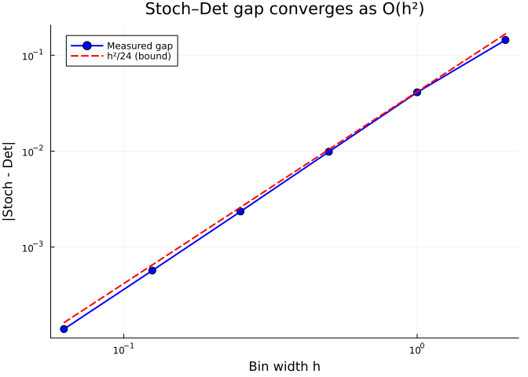
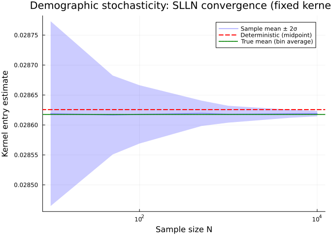
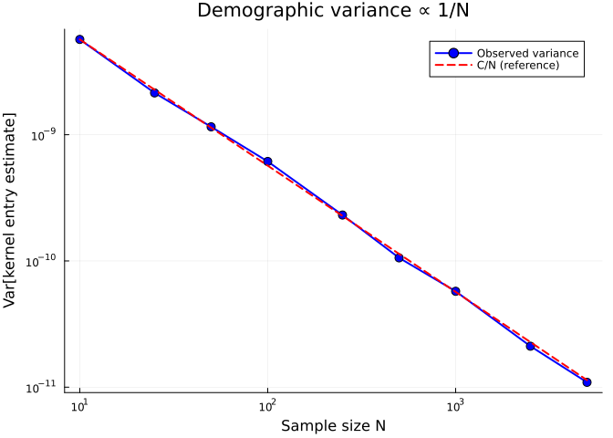
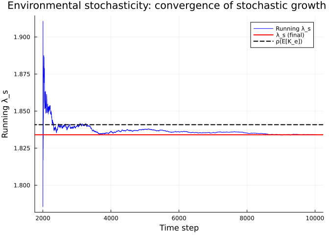
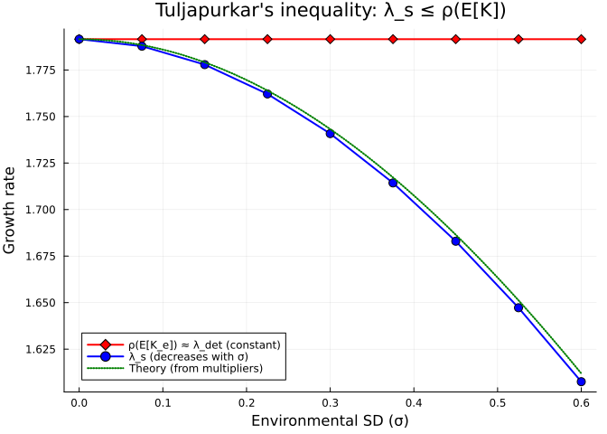
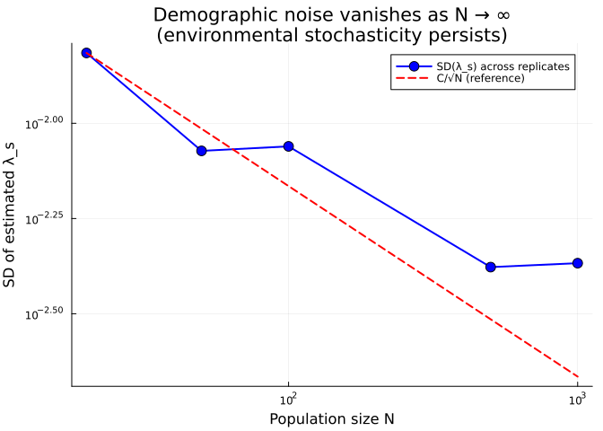

Environmental vs Demographic Stochasticity: A Categorical Perspective
Simon Frost
Overview
Population projection models face three orthogonal sources of error:
- Discretisation (mesh resolution): Continuous kernel $\to$ finite matrix. Error = $O(h^2)$ for midpoint rule, $O(h^4)$ for Simpson’s.
- Environmental stochasticity (Rees & Ellner 2009): Vital rates/kernels vary year-to-year. Affects all individuals equally. Present even with infinite population. Stochastic growth rate $\lambda_s \leq \lambda_{\text{det}}$ (Tuljapurkar’s inequality).
- Demographic stochasticity (Vindenes et al. 2011): Finite population sampling noise. Individual fates drawn independently from a fixed kernel. Vanishes as $N \to \infty$ by SLLN. Variance $\propto 1/N$.
These are orthogonal binary axes, giving $2^3 = 8$ model types:
| Disc. | Env. | Demo. | Category | Error sources | Lean |
|---|---|---|---|---|---|
| — | — | — | Meas | — | Pts 1–4 |
| — | — | Yes | Stoch ($\kappa^{\otimes N}$) | $O(1/\sqrt{N})$ | Pt 16 |
| — | Yes | — | Rand(Meas) | Tuljapurkar | Pts 18–19 |
| — | Yes | Yes | Rand(Stoch) | Tulj. + $O(1/\sqrt{N})$ | Pts 16, 18–19 |
| Yes | — | — | Mat ($A \cdot n$) | $O(h^2)$ | Pts 5–7, 15, 17 |
| Yes | — | Yes | FinStoch (Binom/Poisson) | $O(h^2) + O(1/\sqrt{N})$ | Pts 16, 17 |
| Yes | Yes | — | Rand(Mat) | $O(h^2)$ + Tulj. | Pts 17–19 |
| Yes | Yes | Yes | Rand(FinStoch) | all three | Pts 16–19 |
This vignette demonstrates each axis computationally, connecting to the formal results in the proofs/ Lean proof library and the EnvStochastic.lean module.
Setup
using CategoricalPopulationDynamics
import IntegralProjectionModels as IPM
import MatrixProjectionModels as MPM
using Catlab
using Catlab.CategoricalAlgebra
using Catlab.WiringDiagrams
using Catlab.Programs: @relation
using LinearAlgebra
using Statistics
using Random
using StructuredPopulationCore: lambda
using PlotsPrecompiling packages...
9407.8 ms ✓ SciMLBase
1382.3 ms ✓ SciMLBase → SciMLBaseMLStyleExt
2267.8 ms ✓ SciMLBase → SciMLBaseDistributionsExt
2820.6 ms ✓ IntegralProjectionModels
4208.9 ms ✓ IntegralProjectionModels → IntegralProjectionModelsCatlabExt
5 dependencies successfully precompiled in 30 seconds. 275 already precompiled.
Precompiling packages...
1187.2 ms ✓ ScopedValues
14313.3 ms ✓ JLD2
4530.9 ms ✓ MatrixProjectionModels
4860.4 ms ✓ CategoricalPopulationDynamics → CategoricalPopulationDynamicsIPMExt
5027.9 ms ✓ CategoricalPopulationDynamics → CategoricalPopulationDynamicsMPMExt
5 dependencies successfully precompiled in 29 seconds. 291 already precompiled.Part 1: One Net, Two Worlds
The categorical abstraction separates model topology (what interacts with what) from model semantics (deterministic or stochastic dynamics). We define a single projection net and lower it to both worlds.
Abstract Specification
net = LabelledProjectionNet([:size],
:survive_grow => (:size => :size),
:reproduce => (:size => :size))
println("Projection net:")
println(" States: ", sname(net))
println(" Transitions: ", tname(net))Projection net:
States: [:size]
Transitions: [:survive_grow, :reproduce]Vital Rates (Shared Parameterisation)
# Baseline parameters
s_int = 0.5; s_slope = 0.3
g_int = 0.2; g_slope = 0.8; g_sd = 0.5
f_int = 0.1; f_slope = 0.2
r_mean = 0.5; r_sd = 0.3
L = 0.0; U = 5.0
# Survival probability (logistic)
s(z) = 1.0 / (1.0 + exp(-(s_int + s_slope * z)))
# Growth kernel (Gaussian)
g(z_new, z) = exp(-0.5 * ((z_new - (g_int + g_slope * z)) / g_sd)^2) / (g_sd * sqrt(2π))
# Fecundity
f_rate(z) = exp(f_int + f_slope * z)
recruit(z_new) = exp(-0.5 * ((z_new - r_mean) / r_sd)^2) / (r_sd * sqrt(2π))
# Deterministic sub-kernels
P_kernel(z_new, z) = s(z) * g(z_new, z)
F_kernel(z_new, z) = f_rate(z) * recruit(z_new)
full_kernel(z_new, z) = P_kernel(z_new, z) + F_kernel(z_new, z)full_kernel (generic function with 1 method)Deterministic Model (Meas)
In the deterministic world, the kernel is integrated exactly via the midpoint rule (left Kan extension):
domain = ContinuousProjectionDomain(L, U, 100)
transition_kernels = Dict(
:survive_grow => P_kernel,
:reproduce => F_kernel)
# Lower to IPM (deterministic by default)
ipm_domain = ContinuousProjectionDomain(L, U, 100)
target_ipm = IPMTarget(:size => ipm_domain)
ipm_prob = lower(net, target_ipm, transition_kernels)
ipm_sol = IPM.solve(ipm_prob, IPM.EigenAnalysis())
λ_det = IPM.lambda(ipm_sol)
println("Deterministic λ = ", round(λ_det, digits=6))Deterministic λ = 1.791561Part 2: The det Functor — Embedding Meas into Stoch
The det functor maps a measurable function $f : X \to Y$ to the Dirac kernel $\delta_{f(\cdot)} : X \rightsquigarrow Y$. This embedding preserves Kan extension values:
\[\int g \, d\delta_{s(y)} = g(s(y)) = (\text{Lan}_D^{\text{det}} g)(y)\]
We verify this computationally: evaluating a kernel at the midpoint (deterministic) should equal the bin average (stochastic) up to quadrature error.
Midpoint Evaluation vs Bin Average
# Single-bin example: [a, b] = [1.0, 2.0]
a_bin = 1.0
b_bin = 2.0
midpoint = (a_bin + b_bin) / 2
# Test function: f(x) = x²
f_test(x) = x^2
# Deterministic (midpoint evaluation = det functor)
det_value = f_test(midpoint)
# Stochastic (bin average = integration against uniform kernel)
n_quad = 10000
x_quad = range(a_bin, b_bin, length=n_quad)
stoch_value = mean(f_test.(x_quad))
# Exact integral for comparison
exact_integral = (b_bin^3 - a_bin^3) / (3 * (b_bin - a_bin))
println("Deterministic (midpoint): ", round(det_value, digits=8))
println("Stochastic (bin average): ", round(stoch_value, digits=8))
println("Exact integral: ", round(exact_integral, digits=8))
println()
println("Gap |stoch - det| = ", round(abs(stoch_value - det_value), digits=8))
println("Midpoint error bound M₂h²/24 = ", round(2.0 * (b_bin - a_bin)^2 / 24, digits=8))Deterministic (midpoint): 2.25
Stochastic (bin average): 2.33335
Exact integral: 2.33333333
Gap |stoch - det| = 0.08335
Midpoint error bound M₂h²/24 = 0.08333333The gap is the quadrature error — exactly what the formal proof (stoch_vs_det_lanValue in proofs/CpmProofs/MeasDet.lean) bounds by $M_2 h^2 / 24$.
Convergence with Bin Width
As the bin width $h \to 0$, the stochastic (bin average) and deterministic (midpoint) values converge at rate $O(h^2)$:
# f(x) = sin(x), M₂ = max|f''| = 1
f_sin(x) = sin(x)
widths = [2.0, 1.0, 0.5, 0.25, 0.125, 0.0625]
errors_midpoint = Float64[]
for h in widths
a_h = 1.0
b_h = a_h + h
mid = (a_h + b_h) / 2
det_val = f_sin(mid)
stoch_val = mean(f_sin.(range(a_h, b_h, length=10000)))
push!(errors_midpoint, abs(stoch_val - det_val))
end
plot(widths, errors_midpoint,
xlabel="Bin width h", ylabel="|Stoch - Det|",
title="Stoch–Det gap converges as O(h²)",
marker=:circle, markersize=5,
label="Measured gap", linewidth=2, color=:blue,
xscale=:log10, yscale=:log10)
# Reference O(h²) line
plot!(widths, widths.^2 ./ 24,
label="h²/24 (bound)", linewidth=2,
linestyle=:dash, color=:red)
Part 3: Demographic Stochasticity
Demographic stochasticity is finite-population sampling noise. For a fixed kernel $\kappa$, $N$ individuals each independently draw their fate from $\kappa(x, \cdot)$. As $N \to \infty$, the empirical average converges to $\int f \, d\kappa(x)$ by the Strong Law of Large Numbers.
Key properties:
- The kernel $\kappa$ is fixed — it does not vary between individuals or time steps
- Variance $\propto 1/N$ — vanishes as population grows
- Categorically: the $N$-fold product $\kappa^{\otimes N} : X^N \to X^N$ of a single morphism
- Survival transitions: Binomial($N$, $p$); Fecundity: Poisson($\lambda \cdot N$)
This is formalized in proofs/CpmProofs/StochConvergence.lean (Results 83–90).
SLLN for a Single Kernel Entry
Random.seed!(42)
# Kernel entry K(z_i, z_j) = ∫ P(z_i, z) dUnif(z_j ± h/2)
# Deterministic value = P(z_i, z_j) * h (midpoint rule)
z_i = 2.0
z_j = 2.5
h = step_size(domain)
# True expected value (bin average of P_kernel(z_i, ·) over bin j)
n_mc = 10000
z_samples = z_j .+ (rand(n_mc) .- 0.5) .* h
true_mean = mean(P_kernel.(z_i, z_samples)) * h
# Sample means for increasing N (demographic stochasticity)
Ns = [10, 50, 100, 500, 1000, 5000, 10000]
sample_means = Float64[]
sample_stds = Float64[]
for N in Ns
replicate_means = Float64[]
for rep in 1:200
z_samp = z_j .+ (rand(N) .- 0.5) .* h
push!(replicate_means, mean(P_kernel.(z_i, z_samp)) * h)
end
push!(sample_means, mean(replicate_means))
push!(sample_stds, std(replicate_means))
end
# Deterministic value (midpoint)
det_entry = P_kernel(z_i, z_j) * h
plot(Ns, sample_means,
ribbon=2 .* sample_stds,
xlabel="Sample size N", ylabel="Kernel entry estimate",
title="Demographic stochasticity: SLLN convergence (fixed kernel)",
label="Sample mean ± 2σ", linewidth=2, color=:blue,
xscale=:log10, alpha=0.3, fillalpha=0.2)
hline!([det_entry], label="Deterministic (midpoint)", color=:red,
linewidth=2, linestyle=:dash)
hline!([true_mean], label="True mean (bin average)", color=:green,
linewidth=2, linestyle=:dot)
The sample mean converges to the bin average (stochastic Kan value) as $N \to \infty$. The remaining gap to the midpoint (deterministic Kan value) is the quadrature error $O(h^2)$.
Variance Scaling
Demographic variance scales as $1/N$:
Random.seed!(42)
Ns_var = [10, 25, 50, 100, 250, 500, 1000, 2500, 5000]
variances = Float64[]
for N in Ns_var
replicate_means = Float64[]
for rep in 1:500
z_samp = z_j .+ (rand(N) .- 0.5) .* h
push!(replicate_means, mean(P_kernel.(z_i, z_samp)) * h)
end
push!(variances, var(replicate_means))
end
plot(Ns_var, variances,
xlabel="Sample size N", ylabel="Var[kernel entry estimate]",
title="Demographic variance ∝ 1/N",
marker=:circle, markersize=5,
label="Observed variance", linewidth=2, color=:blue,
xscale=:log10, yscale=:log10)
# Reference 1/N line
c = variances[1] * Ns_var[1]
plot!(Ns_var, c ./ Ns_var,
label="C/N (reference)", linewidth=2,
linestyle=:dash, color=:red)
Part 4: Environmental Stochasticity
Environmental stochasticity is year-to-year variation in vital rates. The kernel itself changes at each time step, drawn from an environment distribution. This affects all individuals equally and persists even with infinite population size.
Key properties:
- The morphism (kernel) is random — varies across time steps
- Present even at $N = \infty$ — not a finite-population effect
- Categorically: a distribution over morphisms $\kappa_e : X \to X$ in Stoch
- Stochastic growth rate: $\lambda_s = \exp(E[\log \lambda_t]) \leq \rho(E[K_t])$ (Tuljapurkar’s inequality)
This is formalized in proofs/CpmProofs/EnvStochastic.lean (Results 96–99).
Year-Specific Kernel Matrices
Random.seed!(42)
# 20 year-specific parameter perturbations (environmental variation)
n_years = 20
s_offsets = randn(n_years) .* 0.3
g_offsets = randn(n_years) .* 0.2
f_offsets = randn(n_years) .* 0.15
# Build year-specific kernel matrices via left Kan extension
A_years = Matrix{Float64}[]
λ_years = Float64[]
for yr in 1:n_years
function P_yr(z_new, z)
s_yr = 1.0 / (1.0 + exp(-(s_int + s_slope * z + s_offsets[yr])))
g_yr = exp(-0.5 * ((z_new - (g_int + g_slope * z + g_offsets[yr])) / g_sd)^2) /
(g_sd * sqrt(2π))
return s_yr * g_yr
end
function F_yr(z_new, z)
return exp(f_int + f_slope * z + f_offsets[yr]) * recruit(z_new)
end
K_yr(z_new, z) = P_yr(z_new, z) + F_yr(z_new, z)
A_yr = left_kan_extension(K_yr, domain)
push!(A_years, A_yr)
push!(λ_years, lambda(A_yr))
end
println("Per-year λ range: [", round(minimum(λ_years), digits=4),
", ", round(maximum(λ_years), digits=4), "]")
# The correct comparator for Tuljapurkar's inequality is ρ(E[K_e]),
# the eigenvalue of the MEAN matrix — not the baseline kernel.
# Due to Jensen's inequality on nonlinear vital rates (logistic survival,
# exponential fecundity), E[K_e] ≠ K_baseline.
A_mean = mean(A_years)
λ_mean_matrix = lambda(A_mean)
println("\nλ (baseline kernel): ", round(λ_det, digits=4))
println("ρ(mean matrix E[K_e]): ", round(λ_mean_matrix, digits=4))Per-year λ range: [1.4384, 2.2037]
λ (baseline kernel): 1.7916
ρ(mean matrix E[K_e]): 1.8408Stochastic Simulation (Kernel Resampling)
Random.seed!(123)
T_sim = 10000
n = n_meshpoints(domain)
pop = ones(n) ./ n
log_lambdas = Float64[]
for t in 1:T_sim
yr = rand(1:n_years)
pop_new = A_years[yr] * pop
λ_t = sum(pop_new) / sum(pop)
push!(log_lambdas, log(λ_t))
pop = pop_new ./ sum(pop_new)
end
burn_in = 2000
λ_s = exp(mean(log_lambdas[burn_in+1:end]))
println("ρ(mean matrix E[K_e]) = ", round(λ_mean_matrix, digits=6))
println("Stochastic λ_s = ", round(λ_s, digits=6))
println("Tuljapurkar penalty = ", round(λ_mean_matrix - λ_s, digits=6))
println("Tuljapurkar: λ_s ≤ ρ(E[K])? ", λ_s ≤ λ_mean_matrix)ρ(mean matrix E[K_e]) = 1.840833
Stochastic λ_s = 1.834042
Tuljapurkar penalty = 0.006791
Tuljapurkar: λ_s ≤ ρ(E[K])? truerunning_mean = [mean(log_lambdas[burn_in+1:t]) for t in burn_in+1:length(log_lambdas)]
plot(burn_in+1:length(log_lambdas), exp.(running_mean),
xlabel="Time step", ylabel="Running λ_s",
title="Environmental stochasticity: convergence of stochastic growth rate",
label="Running λ_s", linewidth=1, color=:blue)
hline!([λ_s], label="λ_s (final)", color=:red, linewidth=2)
hline!([λ_mean_matrix], label="ρ(E[K_e])", color=:black, linewidth=2, linestyle=:dash)
Tuljapurkar’s Inequality: λ_s Decreases with Variance
We sweep over increasing environmental variance to demonstrate Tuljapurkar’s inequality. To isolate the effect of variance from changes in the mean, we use mean-preserving scalar perturbations: each year’s matrix is $K_e = m_e \cdot K_{\text{det}}$ where the multipliers $m_e = \exp(\sigma \varepsilon_e) / \overline{\exp(\sigma \varepsilon)}$ are normalized to have sample mean exactly 1. This ensures $\bar{K} = K_{\text{det}}$ exactly, so $\rho(\bar{K})$ is constant across $\sigma$ values. The stochastic growth rate $\lambda_s$ then decreases monotonically with variance.
Random.seed!(42)
n_env = 20
base_ε = randn(n_env)
# Baseline deterministic matrix
A_det_sweep = left_kan_extension(full_kernel, domain)
λ_det_sweep = lambda(A_det_sweep)
σ_vals = range(0.0, 0.6, length=9)
λ_s_by_σ = Float64[]
λ_mean_by_σ = Float64[]
for σ in σ_vals
# Mean-preserving lognormal multipliers, normalized so sample mean = 1
raw_multipliers = exp.(σ .* base_ε)
multipliers = raw_multipliers ./ mean(raw_multipliers)
A_σ = [multipliers[yr] .* A_det_sweep for yr in 1:n_env]
# ρ(E[K_e]) — should ≈ λ_det for all σ
push!(λ_mean_by_σ, lambda(mean(A_σ)))
# Stochastic simulation with fixed RNG for comparability
Random.seed!(999)
pop_σ = ones(n_meshpoints(domain))
pop_σ ./= sum(pop_σ)
log_λs = Float64[]
for t in 1:10000
yr = rand(1:n_env)
pop_new = A_σ[yr] * pop_σ
push!(log_λs, log(sum(pop_new) / sum(pop_σ)))
pop_σ = pop_new ./ sum(pop_new)
end
push!(λ_s_by_σ, exp(mean(log_λs[2001:end])))
end
plot(Vector{Float64}(σ_vals), λ_mean_by_σ,
xlabel="Environmental SD (σ)",
ylabel="Growth rate",
title="Tuljapurkar's inequality: λ_s ≤ ρ(E[K])",
marker=:diamond, markersize=5,
label="ρ(E[K_e]) ≈ λ_det (constant)", linewidth=2, color=:red)
plot!(Vector{Float64}(σ_vals), λ_s_by_σ,
marker=:circle, markersize=5,
label="λ_s (decreases with σ)", linewidth=2, color=:blue)
# Theoretical prediction for normalized lognormal multipliers:
# log λ_s = log λ_det + E[log m_e] where m_e = exp(σε_e) / mean(exp(σε))
# = log λ_det + mean(σε) - log(mean(exp(σε)))
# ≈ log λ_det - σ²/2 for large n_env (Jensen gap)
σ_fine = range(0, 0.6, length=50)
λ_theory = [begin
raw = exp.(σ_f .* base_ε)
λ_det_sweep * exp(mean(log.(raw ./ mean(raw))))
end for σ_f in σ_fine]
plot!(σ_fine, λ_theory,
label="Theory (from multipliers)", linewidth=2,
linestyle=:dot, color=:green)
With mean-preserving perturbations, $\lambda_s$ decreases monotonically with environmental SD while $\rho(\bar{K})$ remains constant. The Tuljapurkar penalty $\rho(\bar{K}) - \lambda_s$ grows with variance.
Tuljapurkar penalty by σ (mean-preserving perturbation):
σ = 0.0: ρ(E[K]) = 1.7916, λ_s = 1.7916, penalty = 0.0, λ_s ≤ ρ(E[K])? true
σ = 0.08: ρ(E[K]) = 1.7916, λ_s = 1.7878, penalty = 0.0038, λ_s ≤ ρ(E[K])? true
σ = 0.15: ρ(E[K]) = 1.7916, λ_s = 1.7779, penalty = 0.0137, λ_s ≤ ρ(E[K])? true
σ = 0.22: ρ(E[K]) = 1.7916, λ_s = 1.7621, penalty = 0.0294, λ_s ≤ ρ(E[K])? true
σ = 0.3: ρ(E[K]) = 1.7916, λ_s = 1.7408, penalty = 0.0507, λ_s ≤ ρ(E[K])? true
σ = 0.38: ρ(E[K]) = 1.7916, λ_s = 1.7143, penalty = 0.0772, λ_s ≤ ρ(E[K])? true
σ = 0.45: ρ(E[K]) = 1.7916, λ_s = 1.683, penalty = 0.1086, λ_s ≤ ρ(E[K])? true
σ = 0.52: ρ(E[K]) = 1.7916, λ_s = 1.6473, penalty = 0.1443, λ_s ≤ ρ(E[K])? true
σ = 0.6: ρ(E[K]) = 1.7916, λ_s = 1.6075, penalty = 0.184, λ_s ≤ ρ(E[K])? trueNote: When vital rates are perturbed on their natural scales (logit for survival, log for fecundity), the mean matrix $E[K_e]$ itself changes with $\sigma$ due to Jensen’s inequality on the nonlinear link functions. In that case, $\lambda_s$ may increase even as the Tuljapurkar penalty grows, because $\rho(E[K_e])$ increases faster. The inequality $\lambda_s \leq \rho(E[K_e])$ still holds, but to see $\lambda_s$ decrease one must compare against a fixed mean matrix.
Part 5: The 2³ Model Cube
The three error axes — discretisation, environmental stochasticity, and demographic stochasticity — are orthogonal binary choices. This gives $2^3 = 8$ model types, each in a named category. We introduce the Rand(C) construction to name environmental stochasticity categorically: a morphism in Rand(C) is a probability distribution over morphisms in C (Part 19, Results 103–110).
Three orthogonal axes → 2³ = 8 model types
No demographic Demographic (N < ∞)
stochasticity stochasticity
┌─────────────────┐ ┌─────────────────┐
No env │ Meas │ N→∞ │ Stoch │
stoch. │ (exact, f ∘ s) │◄────────│ (κ^⊗N) │ Continuous
└────────┬────────┘ └────────┬────────┘
│ h→0 │ h→0
┌────────▼────────┐ ┌────────▼────────┐
│ Mat │ N→∞ │ FinStoch │
│ (A·n, +h²) │◄────────│ (Binom/Poisson) │ Discrete
└─────────────────┘ └─────────────────┘
┌─────────────────┐ ┌─────────────────┐
Env │ Rand(Meas) │ N→∞ │ Rand(Stoch) │
stoch. │ (random f_e, │◄────────│ (random κ_e, │ Continuous
│ +Tuljapurkar) │ │ +Tulj + 1/√N) │
└────────┬────────┘ └────────┬────────┘
│ h→0 │ h→0
┌────────▼────────┐ ┌────────▼────────┐
│ Rand(Mat) │ N→∞ │ Rand(FinStoch) │
│ (random A_e, │◄────────│ (all three │ Discrete
│ +h²+Tulj) │ │ error sources) │
└─────────────────┘ └─────────────────┘
Arrows show convergence: h→0 (disc→cont), N→∞ (demo→det)
Three axis-functors form a commutative cube:
disc: Meas→Mat, Stoch→FinStoch, Rand(Meas)→Rand(Mat), ...
demo: Meas→Stoch, Mat→FinStoch, Rand(Meas)→Rand(Stoch), ...
rand: C→Rand(C) for any base category C (Dirac embedding δ)
Error decomposition:
|λ̂ - λ_true| ≤ C₁·h² + C₂·σ²_env + C₃/√N
───── ──────── ──────
disc. environ. demog.
(Pt 17) (Pt 18) (Pt 16)Lean Formalization Map
═══════════════════════════════════════════════════════════════════
Formal Results (proofs/CpmProofs, machine-checked in Lean 4)
═══════════════════════════════════════════════════════════════════
AXIS 1: Discretisation (Meas → Mat)
──────────────────────────────────────────
MeasDet.lean:
R74 lanValueDet s f = f ∘ s (det Kan = composition)
R76 lanValueDet_unique (strict, not a.e.)
R77 det_preserves_lanValue (det preserves Kan)
R80 |stoch - det| ≤ M₂h²/24 (midpoint bound)
R81 |stoch - simpson| ≤ M₄h⁴/720 (Simpson bound)
SpectralConvergence.lean:
R94 rowSumNormDist ≤ M₂Lh²/24 (matrix-level O(h²))
R95 dominantEigenvalue error control (spectral reduction)
AXIS 2: Environmental stochasticity — Rand(C) construction
──────────────────────────────────────────────────────────
EnvStochastic.lean:
R96 StochEnv (env-indexed kernel family)
R97 envMeanKernel (mean kernel E[K_e])
R98 stochGrowthRate (λ_s definition)
R99 tuljapurkar_inequality_statement (λ_s ≤ ρ(Ē[K]))
R100 env_vs_demographic_orthogonality (categorical distinction)
R101 env_stoch_variance_decomposition (total = env + demo/N)
R102 orthogonal_error_decomposition (3-axis error bound)
RandCategory.lean:
R103 RandMorph (morphism in Rand(Mat))
R104 diracEmbed (δ: Mat → Rand(Mat))
R105 randExpect (E[·]: Rand(Mat) → Mat)
R106 dirac_expect_roundtrip (E[δ(A)] = A)
R107 rand_identity_expect (E[δ(I)] = I)
R108 tuljapurkar_spectral_contraction (Rand contracts ρ)
R109 rand_commutative_cube (disc∘rand = rand∘disc, ...)
R110 model_cube_classification (8 types with Rand(C) names)
AXIS 3: Demographic stochasticity
─────────────────────────────────
StochConvergence.lean:
R84 empiricalMean_tendsto (SLLN for fixed kernel)
R85 stoch_to_det_convergence (N→∞ convergence)
R88 stoch_det_factorization (Kan = detOfIntegrateAlong)
R90 population_size_convergence (demographic noise vanishes)
═══════════════════════════════════════════════════════════════════Part 6: Combined Effects
In real populations, both environmental and demographic stochasticity act simultaneously. Environmental stochasticity varies the kernel across years, while demographic stochasticity adds finite-$N$ sampling noise on top.
Environmental Stochasticity Alone (N = ∞)
# Build year-specific MPMs for stochastic simulation
Random.seed!(42)
mpms_by_year = MPM.MatrixProjectionModel[]
for yr in 1:n_years
function P_yr(z_new, z)
s_yr = 1.0 / (1.0 + exp(-(s_int + s_slope * z + s_offsets[yr])))
g_yr = exp(-0.5 * ((z_new - (g_int + g_slope * z + g_offsets[yr])) / g_sd)^2) /
(g_sd * sqrt(2π))
return s_yr * g_yr
end
function F_yr(z_new, z)
return exp(f_int + f_slope * z + f_offsets[yr]) * recruit(z_new)
end
A_P_yr = left_kan_extension(P_yr, domain)
A_F_yr = left_kan_extension(F_yr, domain)
mpm_yr = lower(net, MPMTarget(),
Dict(:survive_grow => A_P_yr, :reproduce => A_F_yr))
push!(mpms_by_year, mpm_yr)
end
# Environmental stochasticity only (kernel resampling, infinite N)
n0_mpm = 100.0 * ones(n_meshpoints(domain))
prob_env = MPM.MPMProblem(
MPM.StochasticKernelResampled(),
mpms_by_year,
n0_mpm,
(0, 5000);
normalize=true)
sol_env = MPM.solve(prob_env, MPM.DirectIteration())
λ_env = MPM.stochastic_growth_rate(sol_env; burn_in=1000)
println("Environmental stochasticity only (N=∞):")
println(" λ_s = ", round(λ_env, digits=6))Environmental stochasticity only (N=∞):
λ_s = 1.835555Adding Demographic Stochasticity (Finite N)
MPM.jl’s add_mpm_error() adds demographic sampling noise on top of a kernel matrix. Survival transitions are drawn from Binomial distributions, fecundity from Poisson distributions.
Random.seed!(42)
# Compare different population sizes
sample_sizes = [20, 50, 100, 500, 1000]
n_reps = 50
λ_by_N = Dict{Int, Vector{Float64}}()
for N in sample_sizes
λ_by_N[N] = Float64[]
for rep in 1:n_reps
# Build noisy year-specific MPMs (env + demographic)
noisy_mpms = [MPM.add_mpm_error(m, N) for m in mpms_by_year]
prob_both = MPM.MPMProblem(
MPM.StochasticKernelResampled(),
noisy_mpms,
n0_mpm,
(0, 2000);
normalize=true)
sol_both = MPM.solve(prob_both, MPM.DirectIteration())
push!(λ_by_N[N], MPM.stochastic_growth_rate(sol_both; burn_in=500))
end
end
println("Environmental + demographic stochasticity:")
println(" N = ∞ (env only): λ_s = ", round(λ_env, digits=4))
for N in sample_sizes
μ = mean(λ_by_N[N])
σ = std(λ_by_N[N])
println(" N = $(lpad(N, 4)): λ_s = ",
round(μ, digits=4), " ± ", round(σ, digits=4))
endEnvironmental + demographic stochasticity:
N = ∞ (env only): λ_s = 1.8356
N = 20: λ_s = 1.8284 ± 0.0153
N = 50: λ_s = 1.8329 ± 0.0085
N = 100: λ_s = 1.8346 ± 0.0087
N = 500: λ_s = 1.833 ± 0.0042
N = 1000: λ_s = 1.8328 ± 0.0043# Visualize: demographic variance vanishes for large N
mean_λ = [mean(λ_by_N[N]) for N in sample_sizes]
std_λ = [std(λ_by_N[N]) for N in sample_sizes]
plot(sample_sizes, std_λ,
xlabel="Population size N",
ylabel="SD of estimated λ_s",
title="Demographic noise vanishes as N → ∞\n(environmental stochasticity persists)",
marker=:circle, markersize=6,
label="SD(λ_s) across replicates", linewidth=2, color=:blue,
xscale=:log10, yscale=:log10)
# Reference 1/√N line
c_ref = std_λ[1] * sqrt(sample_sizes[1])
plot!(sample_sizes, c_ref ./ sqrt.(sample_sizes),
label="C/√N (reference)", linewidth=2,
linestyle=:dash, color=:red)
Variance Decomposition
The total variance in $\hat{\lambda}$ decomposes as (Result 101):
\[\text{Var}[\hat{\lambda}] = \underbrace{\text{Var}_{\text{env}}[\lambda_e]}_{\text{does not vanish}} + \underbrace{\frac{\text{Var}_{\text{demo}}}{N}}_{\to 0 \text{ as } N \to \infty}\]
Variance decomposition:
Environmental variance (N=∞): σ²_env ≈ 0.028384
Total variance by N:
N = 20: Var[λ̂] = 0.000234
N = 50: Var[λ̂] = 7.2e-5
N = 100: Var[λ̂] = 7.6e-5
N = 500: Var[λ̂] = 1.8e-5
N = 1000: Var[λ̂] = 1.8e-5
For large N, environmental variance dominates.
For small N, demographic variance dominates.Summary
This vignette demonstrated the three orthogonal axes of error in population projection models:
| Axis | Source | Scaling | Lean | Key result |
|---|---|---|---|---|
| Discretisation | Mesh resolution $h$ | $O(h^2)$ midpoint, $O(h^4)$ Simpson | Parts 5–7, 15, 17 | R80, R95 |
| Environmental | Year-to-year kernel variation | $\lambda_s \leq \lambda_{\text{det}}$ | Part 18 | R99 (Tuljapurkar) |
| Demographic | Finite population $N$ | $O(1/\sqrt{N})$, vanishes | Part 16 | R84, R90 (SLLN) |
Key Takeaways
Three axes, not two: Discretisation, environmental stochasticity, and demographic stochasticity are categorically orthogonal. Environmental stochasticity is a distribution over morphisms; demographic stochasticity is the N-fold product of a single morphism (Result 100).
2³ = 8 model types: Three binary axes (disc/cont, env yes/no, demo yes/no) give 8 combinations, each in a different category — from Meas (continuous, no stochasticity) to Rand(FinStoch) (discrete, both stochastic sources). The error decomposes additively across active axes (Result 102).
Environmental stochasticity persists at N = ∞: Unlike demographic noise, environmental variance does not vanish with population size. It reduces $\lambda_s$ below $\lambda_{\text{det}}$ by Tuljapurkar’s inequality (Result 99).
Demographic noise vanishes by SLLN: For a fixed kernel, $N$ i.i.d. samples converge to the kernel integral (Results 84, 90). The remaining gap is the quadrature error from discretisation.
Variance decomposition: Total variance = environmental variance + demographic variance$/N$ (Result 101). Environmental dominates for large $N$; demographic dominates for small $N$.
det functor preserves Kan values: Embedding deterministic functions as Dirac kernels preserves Kan extension values (Result 77). The discretisation gap is $O(h^2)$ (Result 80).